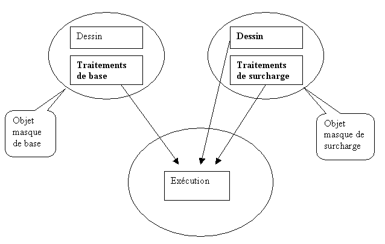
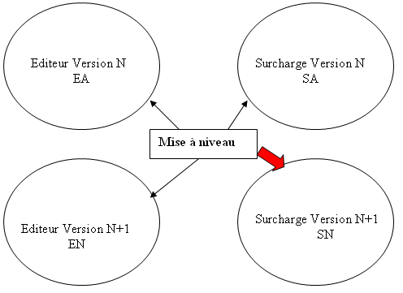
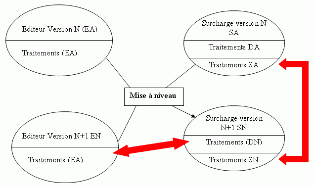

But visé
Le but de la surcharge de masque est d'assurer la pérennité des développements spécifiques et de simplifier au maximum le passage d'une version à l'autre. La verticalisation d'une application consiste à surcharger :
Les dictionnaires.
Les procédures et fonctions Diva.
Les masques, tant au niveau du dessin que des traitements associés.
Les deux modes surcharge
Deux modes de surcharge sont proposés :
Surcharge "complète"
Ici, vous pouvez surcharger aussi bien les dessins que les traitements du masque.
Surcharge des traitements
Seule la surcharge des traitements du masque est possible. Le masque proprement dit est édité en "Lecture seule", ce qui assure de ne pas y apporter de modification par erreur.
Mise en oeuvre de la surcharge des masques
Création d'un masque de surcharge
Avant d'apporter des modifications à un masque de base, la première opération consiste à créer un masque de surcharge. Ce masque est au départ une copie pure et simple du masque de base et c'est dans ce nouveau masque que vous effectuerez vos adaptations. La création vous permet de choisir entre les deux modes de surcharge : complète ou traitements seuls.
Remarque : au niveau des paramètres généraux du masque, une option permet toutefois de repasser du mode Traitements seuls au mode complet ; par contre, l'inverse n'est plus possible.
Le nom du masque de surcharge est déduit du nom du masque de base en lui ajoutant la lettre "u" avant l'extension (exemple : Gte010.dhse ==> gte010u.dhse).
Surcharge des dessins du masque
Les modifications (ajouts et suppressions d'objets, modifications des propriétés d'objets existants) se font dans le masque de surcharge.
Surcharge des traitements du masque
Rappel : à partir de la version 6 d'Harmony, les traitements des masques sont des procédures. L'édition des traitements ouvre un éditeur texte standard affichant l'ensemble des procédures du masque. Chaque procédure peut être surchargée de la même manière que les procédures des modules Diva.
Le source du masque de surcharge contient le code Diva de surcharge et la copie du code Diva de base (ainsi, pour éviter tout risque de confusion entre les deux masques, la consultation des traitements de base ne nécessite pas d’ouvrir le masque de base !). Seul le code Diva de surcharge est modifiable, le code de base peut être simplement consulté (la mention "Traitements de base - Lecture seule" apparaît dans le bandeau de la fenêtre MDI en édition des traitements de base).
Les règles de surcharge sont exactement les mêmes que pour la surcharge des modules.
Exécution avec un masque de surcharge
A l'exécution :
Les dessins du masque sont cherchés dans l'objet du masque de surcharge (mode complet).
Les traitements de base sont cherchés dans l'objet du masque de base.
Les traitements de surcharge sont cherchés dans l'objet du masque de surcharge.

Mise à niveau des masques (dessins)
Lorsque vous recevez une nouvelle version de l'éditeur, les modifications que vous avez effectuées dans votre version précédente des masques de surcharge doivent être combinées avec celles faites dans la nouvelle version des masques de base de l'éditeur. Cette opération est effectuée par un utilitaire de Mise à niveau (intégré à Xwin).
Pour effectuer cette mise a niveau, vous devez avoir en ligne :
Les sources de la version de base précédente (baptisés EA comme Editeur Ancien).
Les sources de la nouvelle version de base (baptisés EN comme Editeur Nouveau).
Les sources de la version précédente de vos surcharges (baptisés SA comme Surcharge Ancien).
L'opération de mise à niveau va créer de nouveaux masques de surcharge (baptisés SN comme Surcharge Nouveau). Pour ce faire, Xwin analyse les différences entre les masques et reporte ces différences pour créer le masque SN.
En cas de conflit (vous avez par exemple modifié une propriété et l'éditeur a modifié différemment la même propriété), Xwin signale le problème et celui-ci doit être réglé "manuellement".

Mise à niveau des masques (traitements)
Les traitements de surcharge sont recopiés dans le nouveau masque de surcharge.

Attention
La mise à niveau se base en grande partie sur les identifiants uniques des objets (numéros pour les objets classiques, identificateurs pour les items de ressource). Soyez extrêmement prudents si vous modifiez des masques en mode texte. Si les identifiants sont cassés, les masques ne peuvent plus être comparés les uns aux autres.
Pour ce qui concerne les identificateurs des items de ressource (choix de menu et boutons de barre d'outils), il est conseillé de suffixer vos identifiants de surcharge (par exemple avec un raccourci du nom de votre société) pour éviter tout risque de doublons avec d'éventuels identifiants ajoutés dans la base.
La documentation de la mise à niveau se trouve dans le livre <Utiliser les projets><Mise à niveau des projets de surcharge>.
Remarques concernant la phase de développement
En débogage, les points d'arrêt posés dans les traitements de base peuvent (et doivent) être placés dans le source de base édité depuis le masque de surcharge.
Mais attention, pour que ces points d'arrêt fonctionnent, il faut que le masque de base ait été compilé en mode debug !
Les occurrences de la recherche multi-fichiers et de la navigation trouvées dans les traitements de base sont éditées dans le masque de surcharge.
Mais attention, pour que la navigation fonctionne dans les traitements de base, il faut avoir les DEUX fichiers "browse" (.dhbr) en ligne.
Lorsque vous travaillez sur un masque de surcharge avec le masque de base "en ligne", Xwin vérifie que base et surcharge correspondent bien.